中华麋鹿园
携程评价数据分析报告
景区: 盐城中华麋鹿园（5A）
数据来源: 携程旅行网 | 样本量: 3050 条评价
时间跨度: 2016-05-05 21:34:05 至 2026-07-12 14:03:00
报告日期: 2026年07月15日
一、执行摘要
本报告基于携程平台上盐城中华麋鹿园的 3050 条游客评价数据，分析时间跨度为 2016 年至 2026 年。通过评分分布、时间趋势、用户画像、文本情感等多维度分析，为景区运营管理提供数据洞察和改进建议。
核心结论：
景区整体口碑良好，平均评分 4.5 分，好评率达到 88.5%。游客最认可的体验是"近距离喂麋鹿""观光车游览"和"亲子互动"；主要短板是"排队等候时间长""性价比感知偏低"和"服务细节有待优化"。
三、评分分析
中华麋鹿园总体口碑较好，平均评分 4.5 分。5星评价最多，达到 2146 条（占比 70.4%），好评合计占比 88.5%，差评占比仅 5.1%.
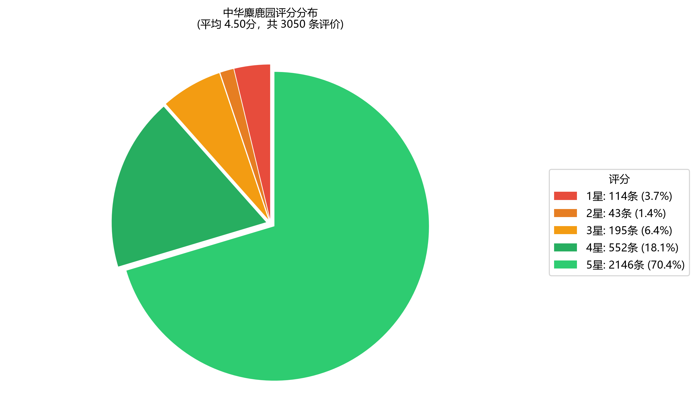
3.1 分项评分对比
从评分维度来看，游客对"景色"评分最高（4.52分），其次是"趣味"（4.45分），"性价比"评分相对较低（4.39分）。自然景观和互动体验是核心竞争力，但价格感知仍有提升空间。
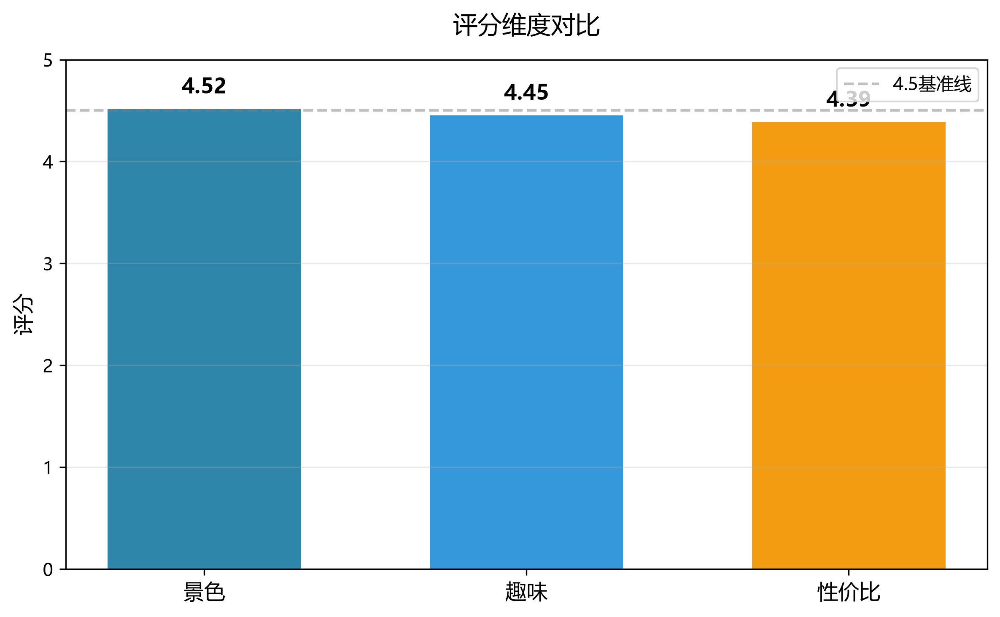
四、时间趋势分析
2025年评价量出现爆发式增长，达到 2025 年峰值，这与景区近年推广力度加大、亲子游市场增长等因素密切相关。
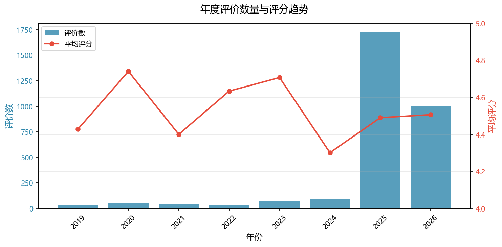
4.1 月度与季节性特征
从月度数据看，评价量在春季末至初夏（4-6月）达到高峰，这与麋鹿活跃期和亲子游旺季高度吻合。夏季(4-6月)是评价最多的季节。
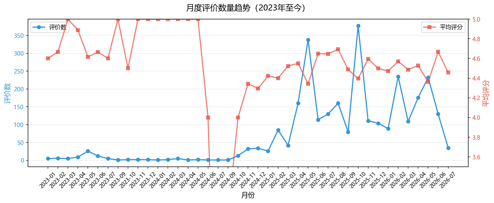
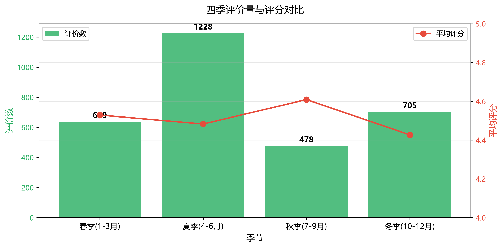
五、用户画像分析
景区吸引了大量携程高等级用户，铂金、黄金、钻石贵宾合计占比 82.5%。地域分布上，江苏省游客是绝对主力，占比超过一半，长三角（苏沪浙）客群占比 73.1%，占主导地位。
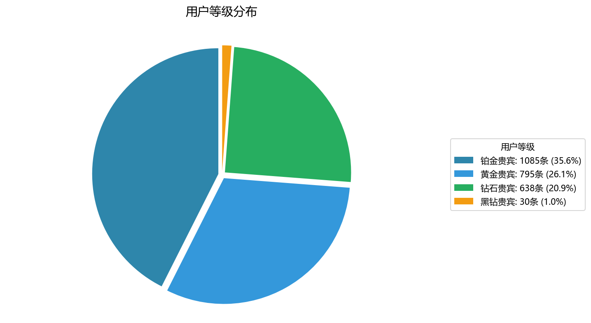
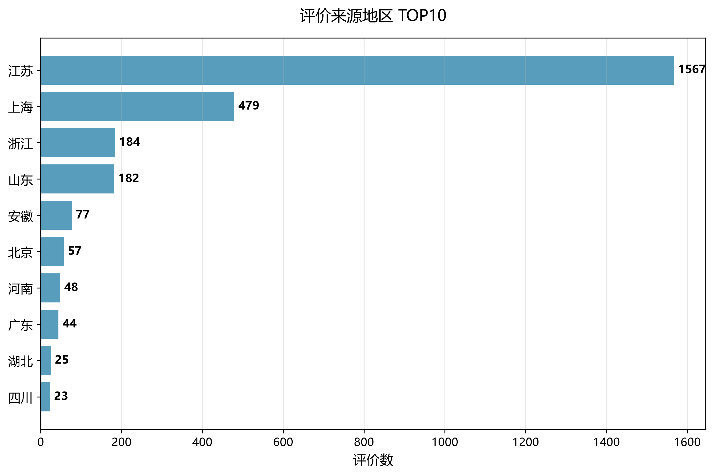
六、文本情感分析
通过 jieba 分词统计，"麋鹿""观光车""胡萝卜""体验""近距离"等词汇出现频率最高，反映出游客最关注的核心体验。
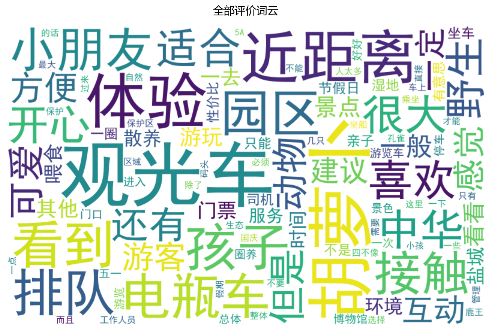
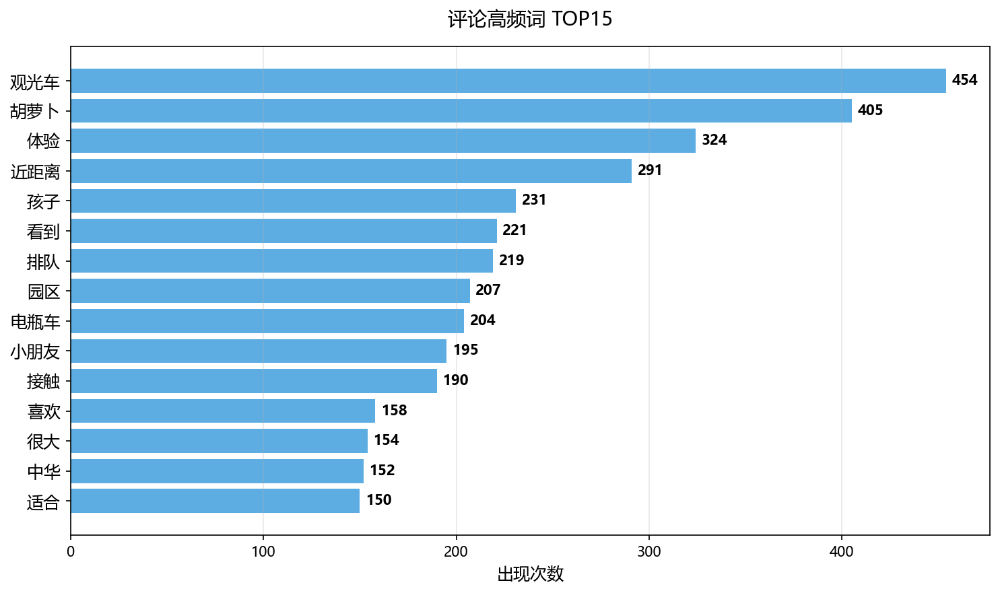
6.1 好评 vs 差评关键词
好评关键词集中在互动体验（观光车、胡萝卜、近距离、孩子），差评关键词集中在排队等候（排队、小时）、价格与服务（门票、工作人员、电瓶车）。
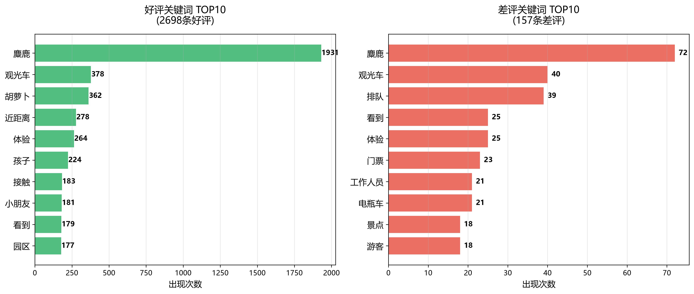
6.2 评论长度分布
大部分游客愿意分享具体体验，评论集中在 11-200 字之间。深度评价数量不多，但通常包含详细攻略和情感表达。
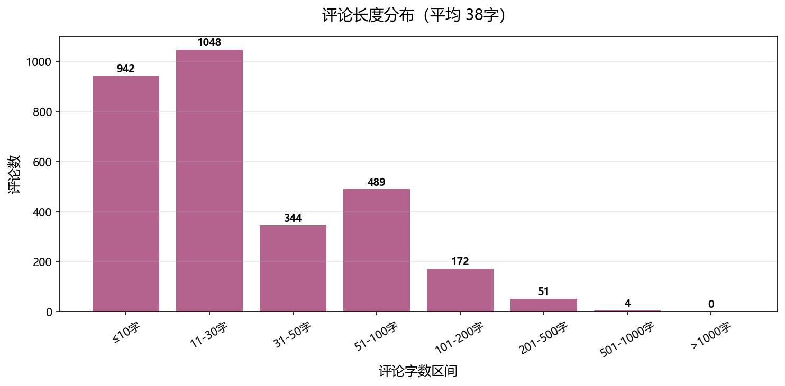
6.3 情感极性模型分析（SnowNLP）
为弥补「仅按星级分段」的局限，本报告引入 SnowNLP 中文情感极性模型，对每条评论做 0-1 语义打分（正面≥0.6、负面≤0.4、中性之间）：正面 75.2%、中性 7.4%、负面 17.3%。模型判定的负面比例（17.3%）显著高于按星级的差评率（5.1%），说明不少高分评价文字中仍夹杂负面体验；其中 331 条 4-5 星评价被模型判为负面（隐性不满）。
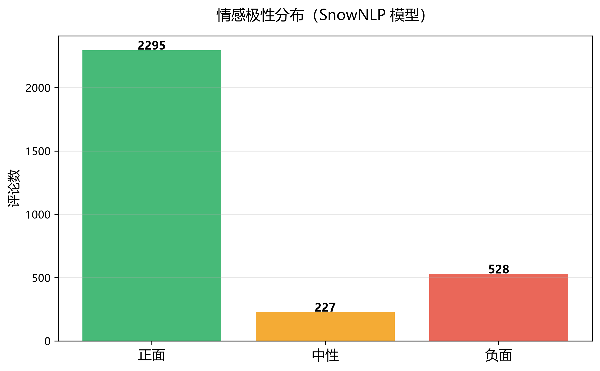
七、主要发现与改进建议
7.1 主要发现
- 口碑优势显著：平均 4.5 分、好评率 88.5%，5A 级景区品牌形象得到游客认可。
- 核心吸引力明确：近距离喂麋鹿、亲子互动、湿地观光是游客最满意的三大体验。
- 性价比是短板：分项评分中"性价比"最低（4.39分），部分游客认为门票和项目价格偏高。
- 排队是最大痛点：差评关键词中"排队""小时"出现频繁，高峰期游客等待体验不佳。
- 客流高度集中：夏季（4-6月）为评价高峰，景区淡旺季差异明显。
- 客群地域集中：江苏、上海、浙江三地游客占比 73.1%，周边市场仍有深挖空间。
- 文本情感比星级更严苛：SnowNLP 模型判定负面评论占 17.3%，远高于按星级的差评率（5.1%）；其中 331 条高分评价被模型判为负面（隐性不满），提示需在好评中挖掘改进线索。
7.2 改进建议
运营管理建议：
- 优化排队体验：在旺季增加观光车、电瓶车运力，设置预约排队系统，增设遮阳/避雨设施。
- 提升性价比感知：推出家庭套票、二销组合（门票+喂食胡萝卜+观光车），让游客感知更超值。
- 加强服务培训：差评中提及"工作人员"较多，应提升一线员工服务意识与沟通效率。
- 平衡淡旺季客流：针对秋季淡季设计主题活动（如观鸟季、摄影节），通过价格杠杆分流旺季压力。
- 拓展远程市场：在保持长三角优势的同时，通过内容营销吸引山东、安徽、北京等潜力客群。
- 重视口碑管理：鼓励优质评价传播，对差评及时回复整改，持续监测 3 星及以下评价关键词。
八、附录
8.1 数据采集说明
数据来源于携程旅行网移动端 API，按最新排序采集，共采集有效评价 3050 条。由于携程 API 分页限制，部分历史评价可能未完全覆盖。
8.2 分析方法
- 数据清洗：pandas 处理缺失值、解析时间字段、提取衍生特征。
- 可视化：matplotlib 生成静态图表。
- 文本分析：jieba 中文分词 + 词频统计 + 词云生成。
- 评分等级：好评 4-5 星，中评 3 星，差评 1-2 星。
- 情感分析：引入 SnowNLP 中文情感极性模型，对每条评论做 0-1 语义打分，补充星级评分的语义视角。